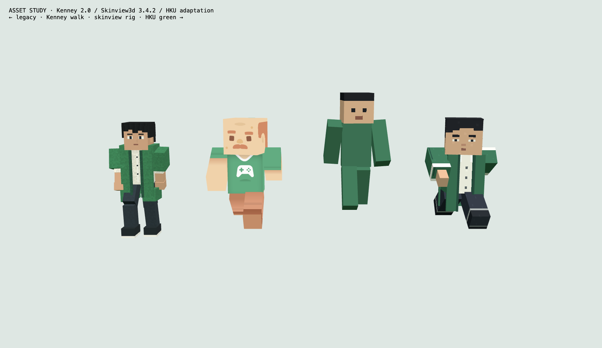

01 / 一套模板，三个独立实例
左侧为 HKU 玩家；中间和右侧为配置生成的两套 NPC。预览页可分别改变动画与装备。下面的“修改前”仅切换左侧玩家，场景光照和展示镜头保持一致。
查看实际资产评估画面

依次为旧版、Kenney 原始 GLB、skinview3d 模块、适配后 HKU；均运行步行动画。02 / 背包与实际持物
E 打开背包；拖拽或依次点击两个槽位移动、交换。底部快捷栏就是槽位 0–8。1–9 / 滚轮切换，空槽收起；[ ] 调整第三人称距离。关闭背包后需要明确点击继续游玩。初始 MacBook 位于储物区第一格，截图为移入快捷栏后的状态。
以下为浏览器真实渲染录像：持物行走 → 第三人称跑跳 → 空槽收起 → 重新装备并返回第一人称。NPC 预览没有参与玩家装备状态。
03 / 校园：口述与画面对应
绝对尺度尚未校准。民防图带 0–10–20 M 标尺，但按图粗算的北楼宽与现有模型相差约 3 倍；导览图没有比例尺。需要一条实测距离裁定。本轮未用镜头或人物缩放掩盖差异，新增尺寸均有估计标注。
已同步修改可见几何、碰撞与地标：东侧步道去除错误顶盖，双侧下行楼梯、内栏杆、细化铺装与路缘、入口狮子及导览牌；B01–B07 对象 ID 保留。
| 视频时间 | 要求与结果 | 依据 |
|---|
| U04 01:10–01:24 | 东侧步道上空无遮挡 → 去除顶盖及旧碰撞 | 回看 |
| U04 01:51–01:58 | 广场不保留临时杂物 → 未添加临时花盆/围挡 | 回看 |
| U04 02:00–02:15 | 内栏杆与两侧楼梯 → 已完成可行走简化版 | 回看 |
| U05 00:00–00:15 | 草坪中央坐姿狮子 → 独立资产与碰撞完成 | 回看 |
自动转写由本机 Whisper 生成，不是人工逐字听校稿。口述、画面证据、推断和仍待确认的楼号/尺寸已在完整清单中分开标注。
04 / 验证与源码入口
自动化浏览器的 Pointer Lock 请求失败，因此浏览器操作验收使用页面提供的明确“拖动兼容模式”；标准鼠标锁定入口仍保留。背包目前是会话状态，刷新页面会恢复初始物品。